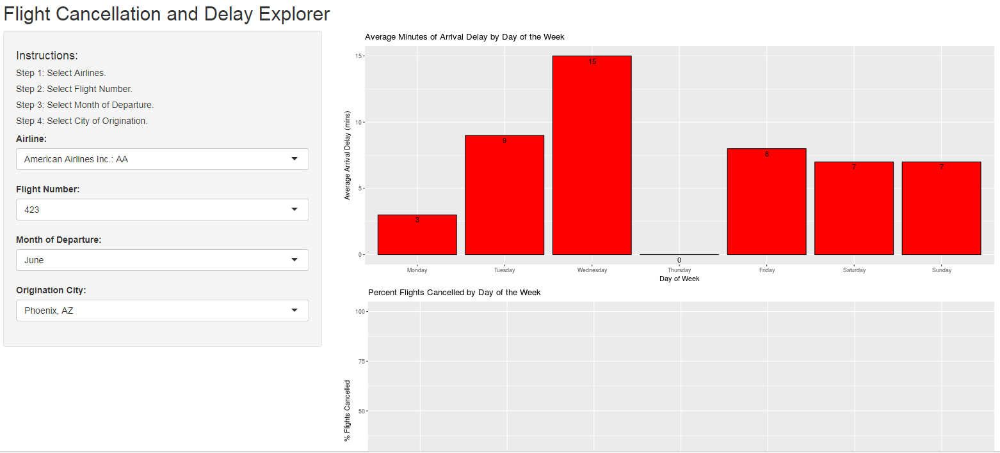

Wouldn't Be Great If...
You knew whether your flight was going to be cancelled or delayed BEFORE you booked it?
Flight Explorer is a new application that allows you to see the past arrival delays and cancellations of your flight!
Wayne Heller
7/23/2017
You knew whether your flight was going to be cancelled or delayed BEFORE you booked it?
Flight Explorer is a new application that allows you to see the past arrival delays and cancellations of your flight!
Behind and intuitive user interface, Flight Explorer uses transportation bureau data from the prior 12 months to give you the information you need to have delay free travel.

Individual Files from the Transportation Bureau were consolidated and summarized for use in the application. See full code in the repository. Links on last slide.
f.path <- file.path("..", "..", "developingdataproducts", "final_project", "FlightExplorer", "FlightSummaryData.csv" )
dfFlightSummary <- read.csv(f.path)
str(dfFlightSummary)
## 'data.frame': 1833309 obs. of 8 variables:
## $ MONTH : int 1 1 1 1 1 1 1 1 1 1 ...
## $ DAY_OF_WEEK : int 1 1 1 1 1 1 1 1 1 1 ...
## $ AIRLINE_NAME : Factor w/ 12 levels "Alaska Airlines Inc.: AS",..: 1 1 1 1 1 1 1 1 1 1 ...
## $ FL_NUM : int 1 2 3 4 5 6 7 8 9 10 ...
## $ ORIGIN_CITY_NAME: Factor w/ 315 levels "Aberdeen, SD",..: 302 273 302 273 302 176 209 273 221 273 ...
## $ DEST_CITY_NAME : Factor w/ 312 levels "Aberdeen, SD",..: 272 300 272 300 176 300 272 210 272 221 ...
## $ avg_delay : int 16 8 5 28 28 21 17 40 15 0 ...
## $ pct_cancelled : int 0 0 0 0 0 0 0 0 0 0 ...
Shiny Application https://rougeone.shinyapps.io/FlightExplorer
Code Repo:
https://github.com/wayneheller/developingdataproducts/tree/gh-pages/final_project/FlightExplorer
Pitch Deck https://wayneheller.github.io/FlightExplorerPitch
Flight Data Source https://www.transtats.bts.gov/Fields.asp